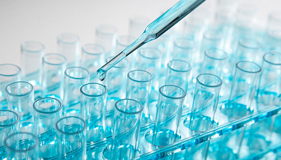
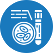

home > 서비스경영 > 세스코 솔루션
세스코 솔루션
40만 고객이 만족하는 세스코 솔루션
통합해충방제
- 1:1 맞춤
통합방제솔루션 - 문제 해충의 종류, 서식처, 생장 주기 등과 발생 장소의 환경적 요인을 전문가가 정확히 진단, 1:1 통합 맞춤 방제 솔루션을 제공하여 해충 문제를 해결해 드립니다.
-
- 관리시스템
- 해충 인프라 기반 솔루션
-
- 컨설팅
- 해충 전문가 컨설팅
-
- 분석보고
- 실시간 온라인 보고 시스템
-
- 이물분석
- 신속한 클레임 처리 가능
- 2,193가지
노하우로 진행 - 일반사업체, 요식업체, 가정집에서 위생문제와 경제적 손실를 초래하는 쥐, 바퀴, 개미, 파리, 나방 등의 해충을 세스코는 2,193가지 과학적인 맞춤 방제솔루션을 통해 해충 발생 및 유입 경로를 차단하여 고객의 생활공간이 청정공간이 되도록 지켜드립니다.
- 세스코 통합해충방제 솔루션
- 세스코의 해충방제 서비스 컨설턴트가 직접 방문하여 문제 해충 발생의 원인 파악부터
퇴치 후 재발 방지까지, 해충방제에 대한 맞춤 방제솔루션을 제시합니다.
-
- STEP01.사전조사 및 진단
- 문제 해충의 종류 및 생장 주기, 서식지, 성별파악 침입 및 이동경로 파악
-
- STEP02.처방
- 세스코 IPM 기술연구소에서 자체 개발 생산된 1:1 맞춤 방제 약제 시스템을 적용
-
- STEP03.초기 집중퇴치 서비스
- 처방된 약제의 투약 및 방제솔루션 적용 해충의 유입통로에 대한 시설 보완 컨설팅
-
- STEP04.정기관리 서비스
- 지속적인 문제 해충 현황 파악으로 해충 재발 방지 · 정기관리 중 해충 재발 시 신속한 무료 출동
통합이물분석
- 국내 유일, 이물전문 분석센터
- 전문분석기법을 활용하여 제품에 혼입된 이물의 실체를 명확히 밝힘으로서
혼입 원인 규명 및 재발 방지 대책을 구립할 수있도록 지원드리겠습니다.
- 동물성 이물
- 곤충, 동물사체 등
- 식물성 이물
- 탄화물, 식물조직 등
- 광물성 이물
- 금속, 조각, 유리 등
- 기기 분석
- GC분석, XRF분석 등
- 생물학 분석
- 육안 및 현미경 검사 등
- 화학적 분석
- 각종 화학 반응검사

- 세스코 이물분석이
필요한 이유 - 세스코만의 30여 가지 과학적 연구 기법과 전문 분석 장비를 통한 원스탑 통합이물분석 서비스로 해마다 증가하는 이물 혼입 사고의 피해를 줄이고 예방해 드립니다. 또한 신속한 이물분석 시스템으로 클레임의 피해를 최소화 합니다.
- 세스코 통합
이물분석 서비스 - 석·박사로 구성된 이물분석 전문가 그룹이 각 대상별, 상황별에 따라 복원 실험, 조직 검사, DNA 분석 등 30여 가지 정밀 분석 시스템을 가동하여 제품에 혼입된 이물의 실체를 명확히 분석합니다.
- STEP01.분석의뢰
- 홈페이지 접수
- STEP02.샘플확인
- 테스트 항목 결정
- STEP03.분석상담
- 분석항목 및 비용 안내
- STEP04.분석진행
- 원스답 분석 진행
- STEP05.결과진행
- 시험성적서 발송
식품안전
- 음식점과
신선함을 지키는 약속 - 이제, 믿을 수 있는 깨끗한 환경은 업장을 방문하는 고객들에게 또 다른 선택 기준이 되었습니다.당신의 고객에게 믿을 수 있고, 깨끗한 업장을 선물하세요.
-

- 식품안전 위생진단
- 환경위생 솔루션 제공
- 식품안전 위생진단
-

- 시험분석
- HACCP 위해요소분석
- 자가품질분석
-
- 식품안전요소
- HACCP 교육
- 식품전문 교육
-
- 컨설팅
- 식품안전 컨설팅
- HACCP 컨설팅
- 세스코 식품안전
서비스가 특별한 이유 - 매년 120만개, 음식이 만들어지는 곳 구석구석을 40년간 들여다보며 주방 위생과 음식의 안전성을 높일 수 있는 노하우를 축적해 온 세스코는 다양한 업종별, 환경별로 발생 가능한 해충위생, 식품안전 문제에 대해 약제·장비·관리방안 등 고객별 맞춤형 솔루션을 제시해 드릴 수 있기 때문입니다.
- 세스코 토탈
식품안전 솔루션 - 세스코의 축적된 위생활경 노하우와 식품 안전 연구소의 첨단 시스템 운영으로 국내에서 유일하게 ONE STOP 토탈위생 솔루션을 제공합니다.
- STEP01
- 외식업장의 사업을 돕는 식품안전 컨설턴트가 찾아갑니다.
- STEP02
- 식품안전 위해요소를 철저히 진단합니다.
- STEP03
- 맞춤형 컨설팅을 통해 사업장이 업그레이드 됩니다.
- STEP04
- 다양한 프로그램으로 깨끗한 맛집으로 알려지게 됩니다.